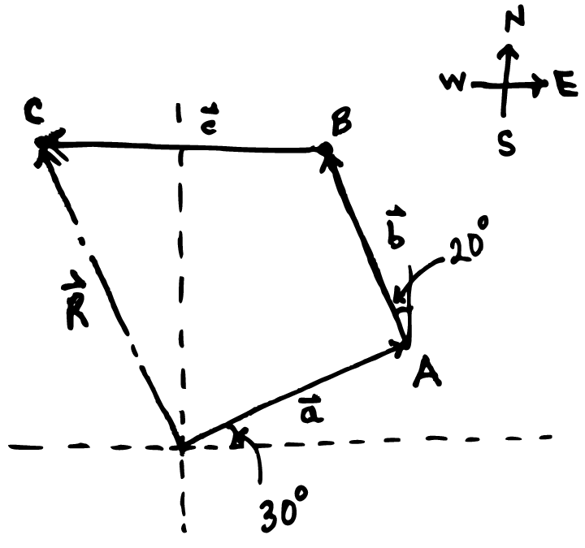
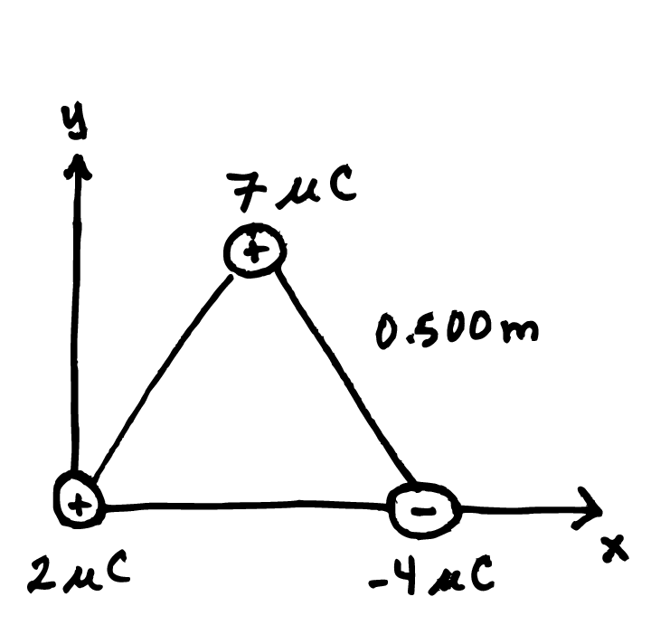
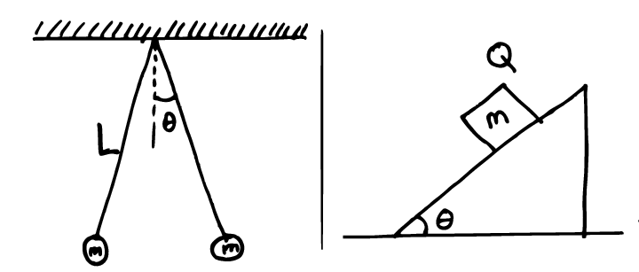
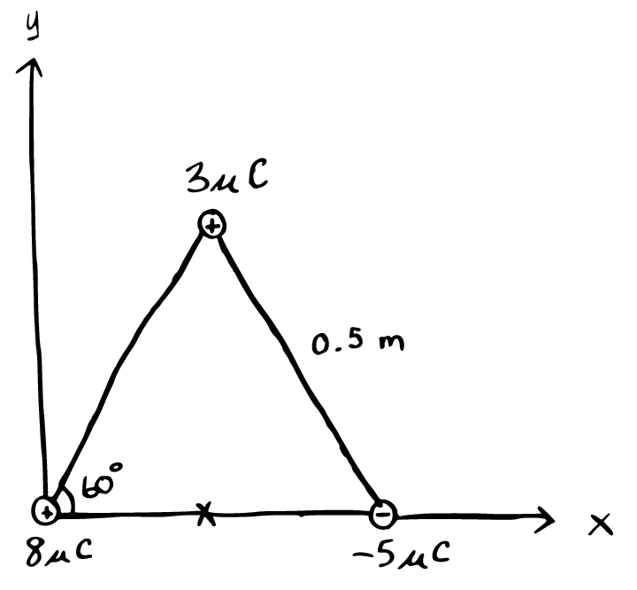

Phy112 HW1.1 - Electric Field
Problem 1.1.1
A commuter airplane starts from an airport and takes the route shown in the below figure. The plane first flies to city A, located \(175~km\) away in a direction \(30.0^\circ\) north of east. Next, it flies for \(150~km ~~ 20^\circ\) west of north, to city B. Finally, the plane flies \(190~km\) due west, to city C. Find the location of city C relative to the location of the starting point. [\(245~km\) at \(21.4^\circ\) west of north]

Problem 1.1.2
Three point charges are located at the corners of an equilateral triangle as shown below. Find the magnitude and direction of the net electric force on the \(2.00 ~ \mu C\) charge.[\(0.437~N\) at \(-85.3^\circ\) from the \(+x\)-axis]

\newpage
Problem 1.1.3
Two small metallic spheres, each of mass \(m=0.20~g\), are suspended as pendulums by light strings from a common point as shown in the below left figure. The spheres are given the same electric charge, and it is found that they come to equilibrium when each string is at an angle of \(\theta = 5.0^\circ\) with the vertical. If each string has length \(L=30.0~cm\), what is the magnitude of the charge on each sphere?[\(7.2~nC\)]

Problem 1.1.4
A small block of mass \(m\) and charge \(Q\) is placed on an insulated, frictionless, inclined plane of angle \(\theta\) as in the above right figure. An electric field is applied parallel to the incline.
- Find an expression for the magnitude of the electric field so the block to remain at rest.[\(E = mg\, sin(\theta)/|Q|\)]
- if \(m=5.40~g\), \(Q=-7.00~ \mu C\), and \(\theta = 25.0^\circ\), determine the magnitude and direction of the electric field that enables the block to remain at rest on the incline.[\(3190~N/C\) down the incline]
Problem 1.1.5
Three charges are at the corners of an equilateral triangle, as shown in the below figure. Calculate the electric field at a point midway between the two charges on the x-axis.

Problem 1.1.6
sketch the electric field pattern around:
- Two positive point charges of magnitude \(1~\mu C\) placed close together.
- Two negative point charges of \(-2~\mu C\), placed close together.
- Two point charges of \(+1~\mu C\) and \(-2~\mu C\), placed close together.
Problem 1.1.7
An electric field of intensity \(3.50~kN/C\) is applied along the x-axis. Calculate the electric flux through a rectangular plane \(0.350~m\) wide and \(0.700~m\) long if
- the plane is parallel to the \(yz-\)plane.
- the plane is parallel to the \(xy-\)plane.
- the plane contains the \(y-\)axis and its normal makes an angle of \(40.0^\circ\) with the \(x-\)axis.
Problem 1.1.8
A point charge \(q\) is located at the center of a spherical shell of radius \(a\) that has a charge \(-q\) uniformly distributed on its surface. Find the electric field
- for all points outside the spherical shell.
- for a point inside the shell a distance \(r\) from the center.
Problem 1.1.9
A very large nonconducting plate lying in the \(xy-plane\) carries a charge per unit area of \(\sigma\). A second such plate located at \(z = 2.00~cm\) and oriented parallel to the \(xy-\)plane carries a charge per unit area of \(-2\sigma\). Find the electric field (Hint: make a sketch of each plate separately and use superposition to find the overall field)
- for \(z<0.0 ~cm\) [\(\sigma / (2 \epsilon_0)\) in neg z direction]
- for \(0
- for \(z>2.0~cm\) [\(\sigma / (2 \epsilon_0)\) in pos z direction]